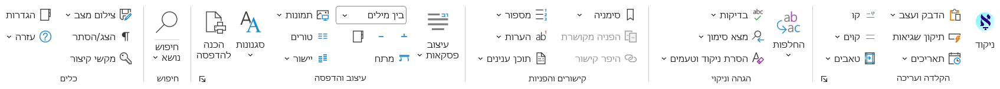

WordAccessories – תוסף לוורד עם כלי עזר לעבודה יעילה עם מסמכי Word: מכתב יד ועד ספר מוכן לדפוס.
מותאם במיוחד למחברים ועורכי ספרים (גם ספרי קודש), קלדנים, מורים, ולכל מי שמרבה לעבוד עם טקסטים ארוכים בעברית.

התוסף ניתן להתנסות ללא עלות למשך 30 יום. לאחר מכן, נדרשת תרומה להמשך השימוש (פרטים מלאים במסך 'אודות' בתוך התוסף).
לכל כלי יש הסבר מפורט בעזרה שבתוך התוסף. התמיכה הטכנית מתבצעת דרך GitHub. מצאתם באג? יש לכם שאלות לגבי השימוש בתוסף? אנחנו כאן!
לנושאים שאינם קשורים לתמיכה טכנית, ניתן לפנות לדוא"ל: elischein@gmail.com.